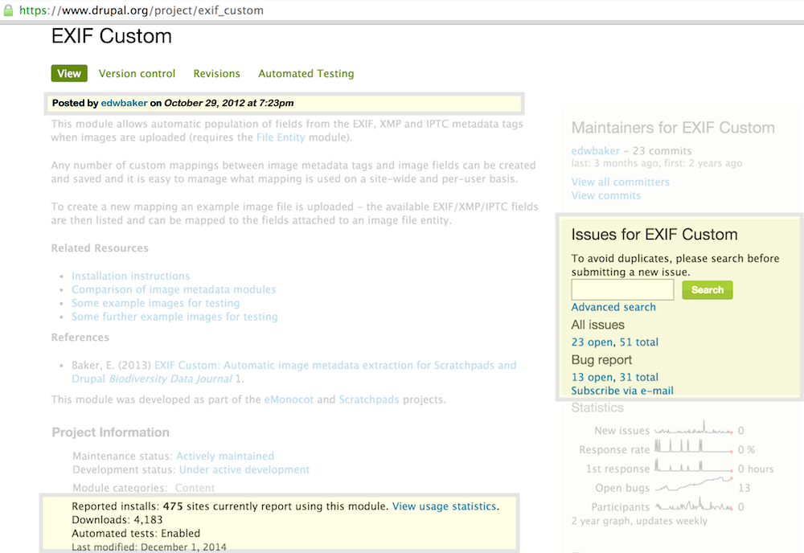
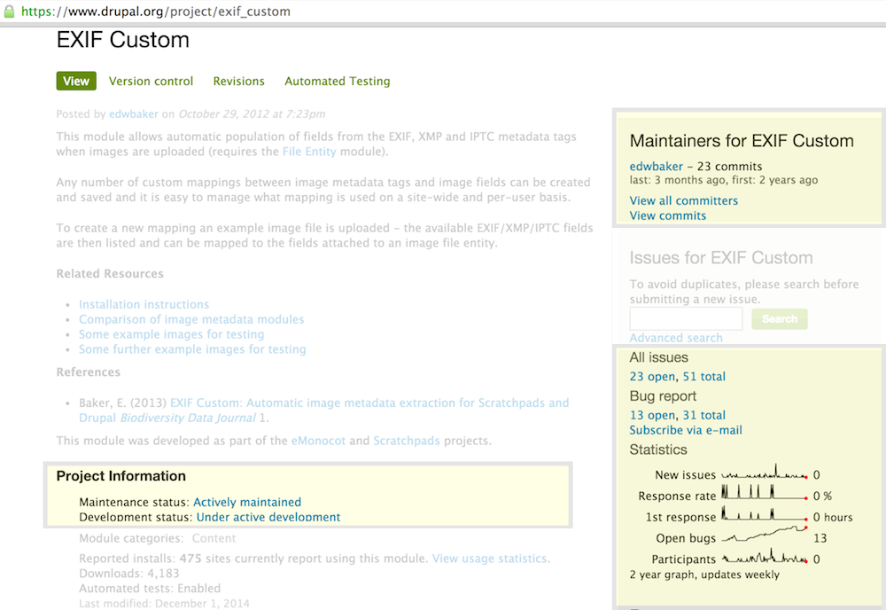
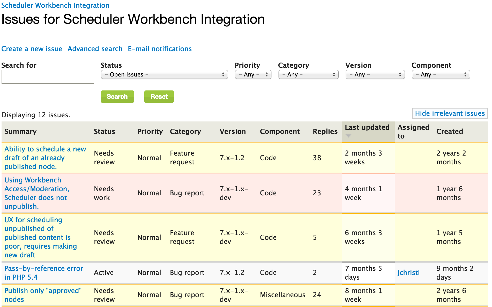
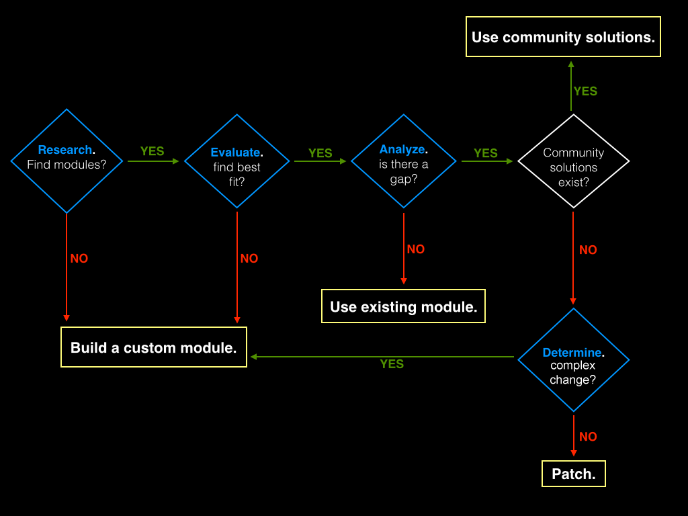
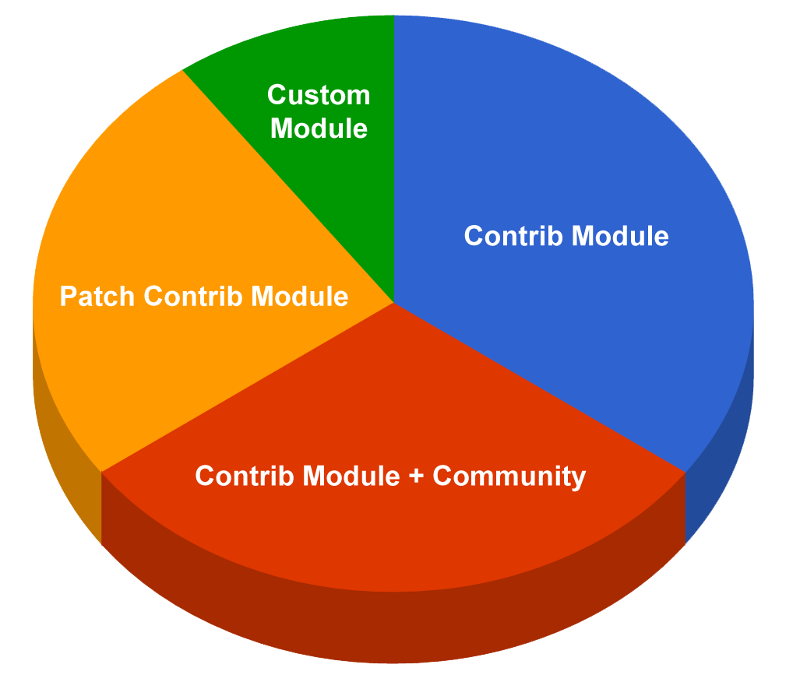

#badcamp
@WeAreGenuine
R.E.A.D /
Michael Miles
R.E.A.D
How to Select the Right Modules
2015.badcamp.net/node/169
Badcamp 2015
#badcamp
Michael Miles
From: Boston, MA USA
Work: Genuine @WeAreGenuine(.com)
Exp: Working with Drupal since 2008.
Acquia Grand Master. 2014 Acquia MVP.
Twitter: @mikemiles86
Drupal.org: mikemiles86
All the Places: mikemiles86
Goals of this Session
- Outline the steps of R.E.A.D
- Demonstrate the effectivness of R.E.A.D
- Teach great module selection habits
What it is all About
How to make smart, timely and informed decisions.
Why this is Important
All projects are subject to the same limits of time (timeline), functionality (scope) and money (budget).
R.E.A.D
- Research what exists
- Evaluate the options
- Analyze the gaps
- Determine work needed
Badcamp presents
A Real World Scenario
Produced by Mike Miles
Starring
A. Drupalist
Act 0: The Requirements
Feature: Moderation Schedule
In order to automate workbench workflow
As a content editor
I want to be able to schedule moderation state transitions
Scenario: Select States
When I create a moderation transition schedule
Then I can select the starting moderation state
And I can select the ending moderation state
Scenario: Select Dates
When I schedule moderated content to transition
Then I can select the date to set the starting moderation state
And I can select the date to set the ending moderation state
Scenario: Schedule Export
When I have created a moderation transition schedule
Then I can export the schedule using Features
And I can import the schedule into a new site.
Research What Exists
How and where to find modules to meet your needs.
Isolate Functionality Keywords
- Gather all documentation, specs, notes, etc...
- Ask questions about any assumptions
- Mark, highlight, circle unique nouns and verbs
Perform Searches
- Favorite Search Engine, "Drupal [keywords]"
- Drupal.org, "[keywords]"
- ??
Utilize the Community
- Ask for help on IRC: #drupal, #drupal-support
- Find Drupal group on favorite social network(s)
- Talk offline at meetups, camps and cons.
Act 1: Research What Exists
Act 1, Scene 1: Isolate Keywords
Feature: Moderation Schedule
In order to automate workbench workflow
As a content editor
I want to be able to schedule moderation state transitions
Scenario: Select States
When I create a moderation transition schedule
Then I can select the starting moderation state
And I can select the ending moderation state
Scenario: Select Dates
When I schedule moderated content to transition
Then I can select the date to set the starting moderation state
And I can select the date to set the ending moderation state
Scenario: Schedule Export
When I have created a moderation transition schedule
Then I can export the schedule using Features
And I can import the schedule into a new site.
Act 1, Scene 2: Perform Searches

Our plucky developer searches on Drupal.org for "Workbench schedule", to find any related modules.
Act 1, Scene 3: Utilize the Community

Looking for support the developer jumps into the #drupal-support IRC channel and asks the community for advice..
Evaluate the Options
Using metrics to determine the best fit.
Gain General Understanding
- Read the description and linked documentation
- Answer "What does it do and not do?"
- Answer "What does it depend on?"
Community Adoption
- Downloads vs. Installs vs. Age
- Activity of the issue queue
- ??
Maintainer Activity
- Regularity of commits and releases
- Participation in the issue queue
- Acceptence of feedback
Act 2: Evaluate the Options

Act 2, Scene 1: Gain General Understanding

Act 2, Scene 2: Community Adoption
Act 2, Scene 3: Maintainer Activity
Analyze the Gaps
Understanding what it does vs. what you need it to do.
Test the Module
- Download into a sandbox
- Discover what is offered out of the box
- Timebox time spent
Discover Missing Functionality
- List what module does not do
- Bigger the gap = larger amount of effort
- ??
Check for Community Solutions
- Look at the issue queue
- Search "Drupal [module] [functionality]"
- What gaps does community close
Act 3: Analyze the Gaps
Act 2, Scene 1: Test the Module

??
Act 2, Scene 2: Discover Missing Functionality
Unable to create different transitions per node
Unable to set transition states
No Features support
Act 2, Scene 3: Check for Community Solutions
Determine Work Needed
What is needed to close any gaps.
Review the Code
- Understand how functionality works?
- Does it utilize APIs & hooks?
- Does it follow standards?
Evaluate Changes
- What gaps need to be closed?
- Would changes extend?
- Would changes alter?
Estimate Effort
- How complex are the changes?
- How confident in ability to make changes?
- Is there enough time to make changes?
Act 4: Determine Work Needed
Act 4, Scene 1: Review the Code
/**
* Handles when scheduler unpublishes a node.
* @param stdClass $node
* Node being unpublished
*/
function _scheduler_workbench_scheduler_unpublish(&$node) {
if ($state = variable_get('scheduler_unpublish_moderation_state_' . $node->type, FALSE)) {
workbench_moderation_moderate($node, $state);
}
}
/**
* Handles when scheduler publishes a node.
* @param stdClass $node
* Node being published
*/
function _scheduler_workbench_scheduler_pre_publish(&$node) {
if ($state = variable_get('scheduler_publish_moderation_state_' . $node->type, FALSE)) {
$node->workbench_moderation_state_current = $node->workbench_moderation['my_revision']->state;
$node->workbench_moderation_state_new = $state;
}
}
Act 4, Scene 2: Evaluate Changes
Have to reprogram schedule creation
Have to add Features support
Need to extend & alter module
Act 4, Scene 3: Estimate Effort
Changes would be very complex
Confident can make them
Not enough time to rewrite module
Making The Choice
What to do with all the data
Go with the Flow
Solution Percentages
Building with Drupal 8
Act 5: Making The Choice
Act 5, Scene 1: Go with the Flow
- Found modules? Yes
- Found a best fit? Yes
- Are there gaps? Yes
- Are there community solutions? No
- Need a lot of work? Yes
Act 5, Scene 2: Solution

R.E.A.D
- Research what exists
- Evaluate the options
- Analyze the gaps
- Determine work needed
Slides & Notes
Thank You!
Feedback
@mikemiles86
#badcamp
Questions?